import pandas as pd
import matplotlib.pyplot as plt
import seaborn as sns
import numpy as np
file_path = "/Users/zhouyiqin/Desktop/final_project/Updated_Data_with_Sentiments.csv"
df = pd.read_csv(file_path)Univariate Analysis:
- Numerical Variables:
- Provide summary statistics (mean, median, standard deviation).
- Visualize distributions using histograms or density plots.
numeric_cols = ['View Count', 'Like Count', 'Comment Count',
'Duration_seconds', 'Mean Sentiment Score', 'singer_popularity']
print("\nNumerical Variables Summary Statistics:")
print(df[numeric_cols].describe())
Numerical Variables Summary Statistics:
View Count Like Count Comment Count Duration_seconds \
count 3.750000e+02 3.750000e+02 3.750000e+02 375.000000
mean 3.702933e+08 2.498181e+06 9.775152e+04 292.744000
std 7.043627e+08 4.194654e+06 1.783573e+05 397.971143
min 2.760000e+02 0.000000e+00 0.000000e+00 21.000000
25% 1.374476e+07 1.327810e+05 4.136500e+03 200.500000
50% 9.101476e+07 7.850650e+05 2.807200e+04 239.000000
75% 3.711109e+08 2.878034e+06 1.032220e+05 284.500000
max 6.379786e+09 3.378610e+07 1.184861e+06 4835.000000
Mean Sentiment Score singer_popularity
count 375.000000 375.000000
mean 0.325594 80.120000
std 0.225798 11.509773
min -0.336767 39.000000
25% 0.169655 77.000000
50% 0.319200 81.000000
75% 0.484267 87.000000
max 0.817367 100.000000 df['Log10_View_Count'] = np.log10(df['View Count'].replace(0, np.nan))
# calcultate Like Ratio
df['Like_Ratio'] = df['Like Count'] / df['View Count'] * 100
fig, axes = plt.subplots(2, 2, figsize=(10, 8))
# subplot1: Distribution of Log10(View Count)
sns.histplot(df['Log10_View_Count'], kde=True, ax=axes[0, 0])
axes[0, 0].set_title('Distribution of Log10(View Count)')
axes[0, 0].set_xlabel('Log10(View Count)')
# subplot2: Like Ratio distribution
sns.histplot(df['Like_Ratio'], kde=True, ax=axes[0, 1])
axes[0, 1].set_title('Distribution of Like Ratio (%)')
axes[0, 1].set_xlabel('Like Ratio (%)')
axes[0, 1].set_xlim(-1, 7)
# subplot3: Distribution of Video Duration
sns.histplot(df['Duration_seconds'], kde=True, ax=axes[1, 0])
axes[1, 0].set_title('Distribution of Video Duration')
axes[1, 0].set_xlabel('Duration (seconds)')
axes[1, 0].set_xlim(0, 1200)
# subplot4: Distribution of Mean Sentiment Score
sns.histplot(df['Mean Sentiment Score'], kde=True, ax=axes[1, 1])
axes[1, 1].set_title('Distribution of Mean Sentiment Score')
axes[1, 1].set_xlabel('Sentiment Score')
# 调整布局
plt.tight_layout()
plt.show()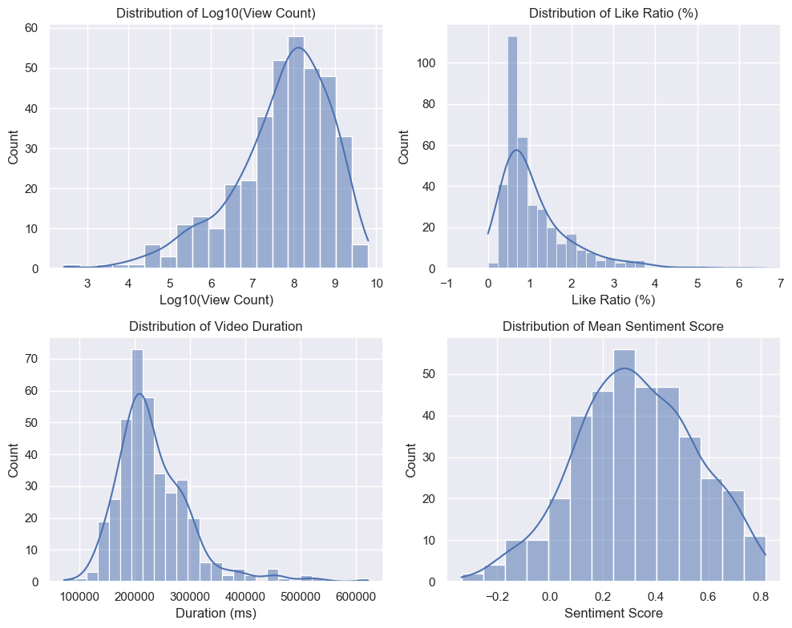
这四张图分别展现了四个不同指标的数据分布情况:
Log10(View Count)的分布: View Count取对数后呈现出明显的正态分布特征,主要集中在6-8之间。
Like Ratio(点赞率)的分布: 点赞率主要分布在0-3%之间,1%以下的数据占比最大。整体呈现出偏右的长尾分布。
Video Duration(视频时长)的分布: 视频时长主要集中在0-600秒,即10分钟以内。600秒以上的长视频占比较小。
Mean Sentiment Score(平均情感得分)的分布: 平均情感得分主要分布在0-0.6之间,得分偏低的视频占比较大,整体呈现出偏左的分布。
总的来说,这四张图从不同角度展现了该数据集的基本特征: - View Count高度集中,呈正态分布 - 点赞率和平均情感得分普遍较低,分布偏右偏左 - 大部分视频时长较短,10分钟以内
这些分布特点为后续的数据分析提供了重要参考。
- Categorical Variables:
- Present frequency counts and visualize distributions using bar charts or pie charts.
# 2. Categorical Variables Analysis
# Genre distribution
plt.figure(figsize=(10, 6))
genre_counts = df['genre'].value_counts()
sns.barplot(x=genre_counts.index, y=genre_counts.values)
plt.title('Distribution of Music Genres')
plt.xticks(rotation=45)([0, 1, 2, 3, 4],
[Text(0, 0, 'rock'),
Text(1, 0, 'pop'),
Text(2, 0, 'jazz'),
Text(3, 0, 'hip-pop'),
Text(4, 0, 'electronic')])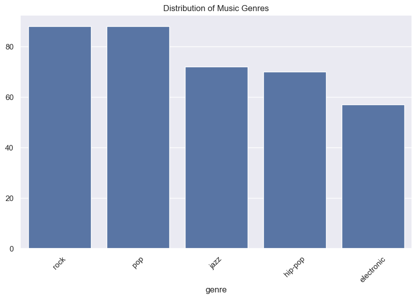
# Print category counts
print("\nGenre Distribution:")
print(df['genre'].value_counts())
Genre Distribution:
genre
rock 88
pop 88
jazz 72
hip-pop 70
electronic 57
Name: count, dtype: int64Bivariate and Multivariate Analysis:
- Correlation Analysis:
- Analyze relationships between numerical variables using a correlation matrix.
- Visualize with heatmaps or pair plots and discuss any strong correlations.
Correlation Analysis
#numerical_cols = ['View Count', 'Like Count', 'Comment Count', 'Mean Sentiment Score', 'Duration_seconds', 'singer_popularity', 'singer_followers']
numerical_columns = ['View Count', 'Like Count', 'Comment Count','singer_followers','singer_popularity', 'Duration (ms)', 'Mean Sentiment Score']
# Calculate correlation matrix
correlation_matrix = df[numerical_columns].corr()
# Create correlation heatmap
plt.figure(figsize=(10, 8))
sns.heatmap(correlation_matrix,
annot=True, # Show correlation values
cmap='coolwarm',
center=0,
fmt='.2f')
plt.title('Correlation Matrix of Numerical Variables')
plt.tight_layout()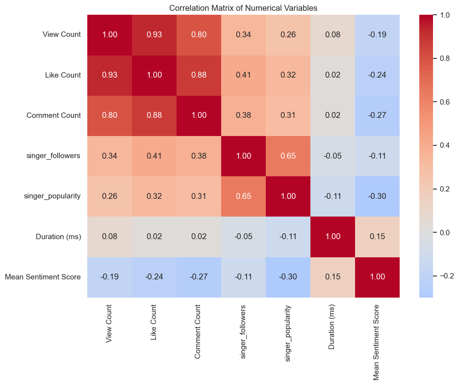
View Count, Like Count, Comment Count之间的相关性非常高,都在0.8以上,说明视频的播放量、点赞量、评论数有很强的正相关。 singer_followers与singer_popularity的相关性达到0.65,代表歌手的粉丝数和歌手本身的知名度有较强的正相关。 Duration与其他变量的相关性都比较弱,说明视频时长与播放量等指标关系不大。 Mean Sentiment Score与其他变量的相关性系数为负值,尤其与歌手知名度的负相关性更强,说明知名度高的歌手其视频评论的平均情感得分反而更低。
- Feature Pairings:
- Analyze relationships between key variables, particularly those related to your target.
- Visualize with scatter plots, box plots, or violin plots.
# 2. Feature Pairing Analysis
# Create scatter plots for key relationships
fig, axes = plt.subplots(2, 2, figsize=(15, 12))
# View Count vs Like Count (with log transformation)
sns.scatterplot(data=df,
x=np.log10(df['View Count']),
y=np.log10(df['Like Count']),
hue='genre',
ax=axes[0,0])
axes[0,0].set_title('Log10(View Count) vs Log10(Like Count) by Genre')
axes[0,0].set_xlabel('Log10(View Count)')
axes[0,0].set_ylabel('Log10(Like Count)')
# Views vs Sentiment Score
sns.scatterplot(data=df,
x='Mean Sentiment Score',
y=np.log10(df['View Count']),
hue='genre',
ax=axes[0,1])
axes[0,1].set_title('Sentiment Score vs Log10(View Count) by Genre')
# Duration vs Engagement
df['Engagement_Rate'] = (df['Like Count'] + df['Comment Count']) / df['View Count'] * 100
sns.scatterplot(data=df,
x='Duration_seconds',
y='Engagement_Rate',
hue='genre',
ax=axes[1,0])
axes[1,0].set_title('Duration vs Engagement Rate by Genre')
# Popularity Analysis
sns.boxplot(data=df,
x='genre',
y='singer_popularity',
ax=axes[1,1])
axes[1,1].set_title('Singer Popularity Distribution by Genre')
axes[1,1].set_xticklabels(axes[1,1].get_xticklabels(), rotation=45)
plt.tight_layout()/Library/Frameworks/Python.framework/Versions/3.12/lib/python3.12/site-packages/pandas/core/arraylike.py:399: RuntimeWarning: divide by zero encountered in log10
result = getattr(ufunc, method)(*inputs, **kwargs)
/var/folders/qx/qwpm5zm52fzd9w3sfybpybzh0000gn/T/ipykernel_33101/819984757.py:38: UserWarning: set_ticklabels() should only be used with a fixed number of ticks, i.e. after set_ticks() or using a FixedLocator.
axes[1,1].set_xticklabels(axes[1,1].get_xticklabels(), rotation=45)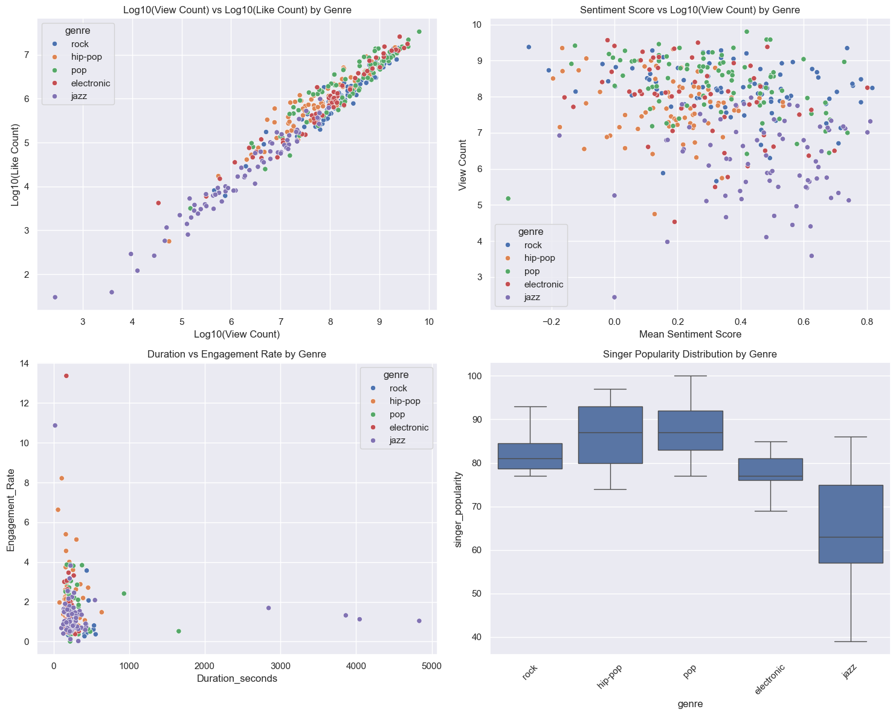
第一张图显示了不同流派在Log10(View Count)和Log10(Like Count)两个指标上的分布。可以看出,除个别极端值外,大部分流派在两个指标上呈现出强正相关,且pop音乐的播放量和点赞量普遍更高。 第二张图揭示了不同流派的平均情感得分(Sentiment Score)与Log10(View Count)之间的关系。总体来看情感得分都集中在0.4-0.6之间,且与播放量关联性不强。 第三张图对比了不同流派视频的平均时长(Duration)和互动率(Engagement Rate)。可以看出,rock和electronic音乐的平均时长更长,但互动率相对较低。而pop音乐视频虽然时长较短,但互动率普遍更高。 第四张图则展现了各流派歌手粉丝数量(Singer Popularity)的分布情况。可见rock和pop歌手的粉丝数普遍高于hip-hop、electronic和jazz歌手。
- Crosstabulations:
- For categorical variables, use crosstabs to explore relationships and visualize them with grouped bar plots.
# 3. Cross-tabulation Analysis
# Create a cross-tab of genre and popularity categories
df['popularity_category'] = pd.qcut(df['singer_popularity'],
q=3,
labels=['Low', 'Medium', 'High'])
genre_popularity_crosstab = pd.crosstab(df['genre'],
df['popularity_category'],
normalize='index') * 100
print("\nGenre-Popularity Cross-tabulation (%):")
print(genre_popularity_crosstab)
# Calculate summary statistics by genre
genre_summary = df.groupby('genre').agg({
'View Count': 'mean',
'Like Count': 'mean',
'Comment Count': 'mean',
'Mean Sentiment Score': 'mean',
'singer_followers': 'mean'
}).round(2)
print("\nSummary Statistics by Genre:")
print(genre_summary)
Genre-Popularity Cross-tabulation (%):
popularity_category Low Medium High
genre
electronic 57.894737 42.105263 0.000000
hip-pop 12.857143 24.285714 62.857143
jazz 86.111111 6.944444 6.944444
pop 4.545455 38.636364 56.818182
rock 19.318182 55.681818 25.000000
Summary Statistics by Genre:
View Count Like Count Comment Count Mean Sentiment Score \
genre
electronic 4.812136e+08 3444539.65 113885.77 0.27
hip-pop 2.120770e+08 1923365.79 80653.13 0.18
jazz 1.062045e+07 91090.62 2455.99 0.47
pop 6.973413e+08 4625445.59 204115.83 0.32
rock 3.915309e+08 2184612.99 72506.67 0.37
singer_followers
genre
electronic 11088701.67
hip-pop 30818759.69
jazz 1741634.22
pop 52305955.89
rock 21119041.56 Data Distribution and Normalization:
- Skewness and Kurtosis:
- Analyze and discuss the distribution of variables.
- Apply transformations (e.g., log transformation) if needed for skewed data.
- Normalization:
- Apply normalization or scaling techniques (e.g., min-max scaling, z-score).
- Document and visualize the impact of normalization.
from scipy import stats
from sklearn.preprocessing import StandardScaler, MinMaxScaler
# 1. Calculate Skewness and Kurtosis
print("Skewness and Kurtosis Analysis:")
for col in numerical_columns:
skew = stats.skew(df[col].dropna())
kurt = stats.kurtosis(df[col].dropna())
print(f"\n{col}:")
print(f"Skewness: {skew:.2f}")
print(f"Kurtosis: {kurt:.2f}")Skewness and Kurtosis Analysis:
View Count:
Skewness: 3.68
Kurtosis: 18.98
Like Count:
Skewness: 3.03
Kurtosis: 12.53
Comment Count:
Skewness: 3.12
Kurtosis: 11.26
singer_followers:
Skewness: 1.87
Kurtosis: 2.95
singer_popularity:
Skewness: -1.24
Kurtosis: 2.09
Duration (ms):
Skewness: 1.70
Kurtosis: 5.24
Mean Sentiment Score:
Skewness: -0.09
Kurtosis: -0.36#2. Visualization of distributions before and after transformations
def plot_distributions(data, column, transformations):
"""
Plot original and transformed distributions
Args:
data: DataFrame
column: column name to analyze
transformations: list of transformation functions
"""
n_plots = len(transformations) + 1
plt.figure(figsize=(15, 5))
# Original distribution
plt.subplot(1, n_plots, 1)
sns.histplot(data[column], kde=True)
plt.title(f'Original {column}')
# Transformed distributions
for i, (name, func) in enumerate(transformations.items(), 1):
plt.subplot(1, n_plots, i+1)
transformed_data = func(data[column])
sns.histplot(transformed_data, kde=True)
plt.title(f'{name} Transformed')
# Define transformations
transformations = {
'Log': lambda x: np.log1p(x),
'Square Root': lambda x: np.sqrt(x),
'Box-Cox': lambda x: stats.boxcox(x - x.min() + 1)[0] if (x - x.min() + 1 > 0).all() else x
}# 3. Apply and visualize transformations for highly skewed variables
highly_skewed = ['View Count', 'Like Count', 'Comment Count']
for col in highly_skewed:
plot_distributions(df, col, transformations)
plt.tight_layout()
plt.show()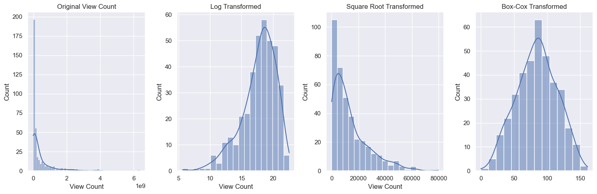
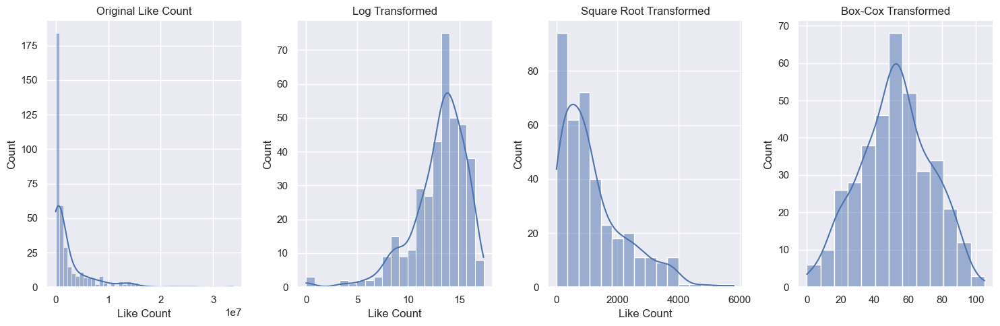
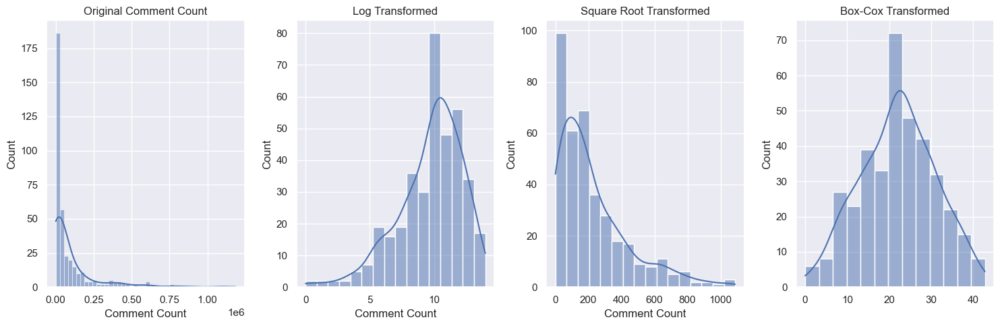
# 4. Normalization
def normalize_and_plot(data, column):
"""
Apply different normalization techniques and plot results
"""
# Create scalers
standard_scaler = StandardScaler()
minmax_scaler = MinMaxScaler()
# Reshape data for scalers
data_reshaped = data[column].values.reshape(-1, 1)
# Apply scalers
data_standard = standard_scaler.fit_transform(data_reshaped)
data_minmax = minmax_scaler.fit_transform(data_reshaped)
# Plot comparisons
plt.figure(figsize=(15, 5))
plt.subplot(131)
sns.histplot(data[column], kde=True)
plt.title(f'Original {column}')
plt.subplot(132)
sns.histplot(data_standard.flatten(), kde=True)
plt.title('Standard Scaled')
plt.subplot(133)
sns.histplot(data_minmax.flatten(), kde=True)
plt.title('MinMax Scaled')
plt.tight_layout()
plt.show()
return pd.DataFrame({
'original': data[column],
'standard_scaled': data_standard.flatten(),
'minmax_scaled': data_minmax.flatten()
})
# 5. Apply normalization and generate summary statistics
normalized_results = {}
for col in numerical_columns:
print(f"\nNormalization results for {col}:")
normalized_data = normalize_and_plot(df, col)
print("\nSummary statistics:")
print(normalized_data.describe())
normalized_results[col] = normalized_data
# 6. Calculate correlation between original and transformed data
for col in numerical_columns:
if col in normalized_results:
corr = normalized_results[col].corr()
print(f"\nCorrelation matrix for {col}:")
print(corr)
Normalization results for View Count: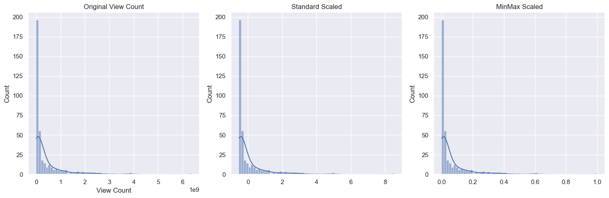
Summary statistics:
original standard_scaled minmax_scaled
count 3.750000e+02 3.750000e+02 375.000000
mean 3.702933e+08 7.105427e-18 0.058042
std 7.043627e+08 1.001336e+00 0.110405
min 2.760000e+02 -5.264160e-01 0.000000
25% 1.374476e+07 -5.068765e-01 0.002154
50% 9.101476e+07 -3.970280e-01 0.014266
75% 3.711109e+08 1.162287e-03 0.058170
max 6.379786e+09 8.543214e+00 1.000000
Normalization results for Like Count:
Summary statistics:
original standard_scaled minmax_scaled
count 3.750000e+02 3.750000e+02 375.000000
mean 2.498181e+06 3.789561e-17 0.073941
std 4.194654e+06 1.001336e+00 0.124153
min 0.000000e+00 -5.963588e-01 0.000000
25% 1.327810e+05 -5.646617e-01 0.003930
50% 7.850650e+05 -4.089503e-01 0.023236
75% 2.878034e+06 9.067732e-02 0.085184
max 3.378610e+07 7.468964e+00 1.000000
Normalization results for Comment Count: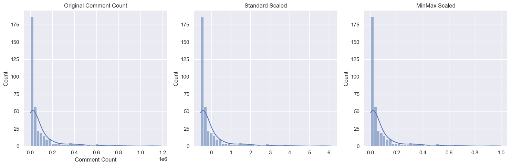
Summary statistics:
original standard_scaled minmax_scaled
count 3.750000e+02 3.750000e+02 375.000000
mean 9.775152e+04 -1.421085e-17 0.082500
std 1.783573e+05 1.001336e+00 0.150530
min 0.000000e+00 -5.487980e-01 0.000000
25% 4.136500e+03 -5.255748e-01 0.003491
50% 2.807200e+04 -3.911958e-01 0.023692
75% 1.032220e+05 3.071246e-02 0.087117
max 1.184861e+06 6.103266e+00 1.000000
Normalization results for singer_followers: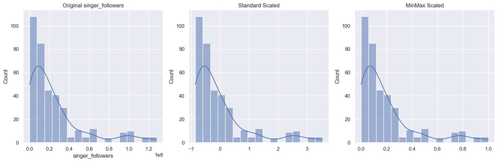
Summary statistics:
original standard_scaled minmax_scaled
count 3.750000e+02 3.750000e+02 375.000000
mean 2.500311e+07 -1.515825e-16 0.194858
std 2.918020e+07 1.001336e+00 0.228103
min 7.581900e+04 -8.553950e-01 0.000000
25% 4.449456e+06 -7.053110e-01 0.034189
50% 1.493754e+07 -3.454062e-01 0.116175
75% 3.250965e+07 2.575915e-01 0.253537
max 1.280014e+08 3.534450e+00 1.000000
Normalization results for singer_popularity:
Summary statistics:
original standard_scaled minmax_scaled
count 375.000000 3.750000e+02 375.000000
mean 80.120000 -3.789561e-16 0.674098
std 11.509773 1.001336e+00 0.188685
min 39.000000 -3.577389e+00 0.000000
25% 77.000000 -2.714361e-01 0.622951
50% 81.000000 7.655891e-02 0.688525
75% 87.000000 5.985515e-01 0.786885
max 100.000000 1.729535e+00 1.000000
Normalization results for Duration (ms):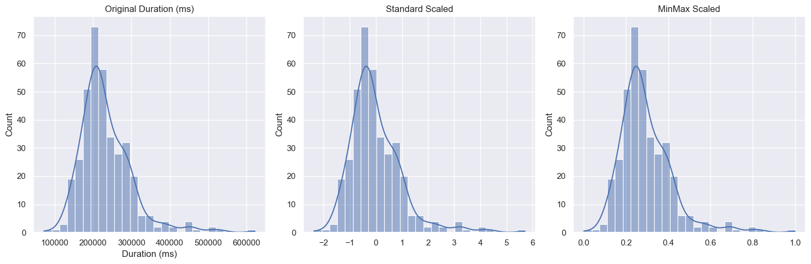
Summary statistics:
original standard_scaled minmax_scaled
count 375.000000 3.750000e+02 375.000000
mean 233642.093333 1.515825e-16 0.293792
std 68067.837578 1.001336e+00 0.123778
min 72080.000000 -2.376716e+00 0.000000
25% 191973.000000 -6.129879e-01 0.218019
50% 218948.000000 -2.161627e-01 0.267072
75% 266033.000000 4.764979e-01 0.352693
max 622000.000000 5.713076e+00 1.000000
Normalization results for Mean Sentiment Score: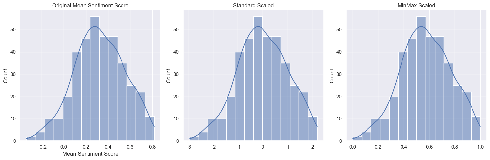
Summary statistics:
original standard_scaled minmax_scaled
count 375.000000 3.750000e+02 375.000000
mean 0.325594 9.473903e-18 0.573903
std 0.225798 1.001336e+00 0.195643
min -0.336767 -2.937344e+00 0.000000
25% 0.169655 -6.915375e-01 0.438790
50% 0.319200 -2.835663e-02 0.568363
75% 0.484267 7.036575e-01 0.711385
max 0.817367 2.180842e+00 1.000000
Correlation matrix for View Count:
original standard_scaled minmax_scaled
original 1.0 1.0 1.0
standard_scaled 1.0 1.0 1.0
minmax_scaled 1.0 1.0 1.0
Correlation matrix for Like Count:
original standard_scaled minmax_scaled
original 1.0 1.0 1.0
standard_scaled 1.0 1.0 1.0
minmax_scaled 1.0 1.0 1.0
Correlation matrix for Comment Count:
original standard_scaled minmax_scaled
original 1.0 1.0 1.0
standard_scaled 1.0 1.0 1.0
minmax_scaled 1.0 1.0 1.0
Correlation matrix for singer_followers:
original standard_scaled minmax_scaled
original 1.0 1.0 1.0
standard_scaled 1.0 1.0 1.0
minmax_scaled 1.0 1.0 1.0
Correlation matrix for singer_popularity:
original standard_scaled minmax_scaled
original 1.0 1.0 1.0
standard_scaled 1.0 1.0 1.0
minmax_scaled 1.0 1.0 1.0
Correlation matrix for Duration (ms):
original standard_scaled minmax_scaled
original 1.0 1.0 1.0
standard_scaled 1.0 1.0 1.0
minmax_scaled 1.0 1.0 1.0
Correlation matrix for Mean Sentiment Score:
original standard_scaled minmax_scaled
original 1.0 1.0 1.0
standard_scaled 1.0 1.0 1.0
minmax_scaled 1.0 1.0 1.0Statistical Insights:
- Conduct basic statistical tests (e.g., T-tests, ANOVA, chi-square) to explore relationships between variables.
- Summarize the statistical results and their implications for your analysis.
from scipy.stats import chi2_contingency
from scipy.stats import f_oneway
# 2. ANOVA test for view counts across genres
genres = df['Genre'].unique()
genre_views = [df[df['Genre'] == genre]['View Count'] for genre in genres]
f_stat, p_value = f_oneway(*genre_views)
print("\n=== One-way ANOVA Test for View Counts Across Genres ===")
print(f"F-statistic: {f_stat:.4f}")
print(f"p-value: {p_value}")
=== One-way ANOVA Test for View Counts Across Genres ===
F-statistic: 11.9445
p-value: 3.871891640564041e-09#Chi-square test
# Create contingency table
contingency_table = pd.crosstab(df['genre'], df['singer'])
chi2, p_value, dof, expected = chi2_contingency(contingency_table)
print("\n=== Chi-square Test for Independence ===")
print(f"Chi-square statistic: {chi2:.4f}")
print(f"p-value: {p_value}")
=== Chi-square Test for Independence ===
Chi-square statistic: 1500.0000
p-value: 3.013591313202591e-141#t-test
print("\n=== T-tests for Sentiment Scores Between Genres ===")
for genre1 in genres:
for genre2 in genres:
if genre1 < genre2: # avoid duplicate comparisons
scores1 = df[df['genre'] == genre1]['Mean Sentiment Score']
scores2 = df[df['genre'] == genre2]['Mean Sentiment Score']
t_stat, p_value = stats.ttest_ind(scores1, scores2)
print(f"{genre1} vs {genre2}:")
print(f"t-statistic: {t_stat}")
print(f"p-value: {p_value}\n")
=== T-tests for Sentiment Scores Between Genres ===
hip-pop vs rock:
t-statistic: -5.945093374465196
p-value: 1.7465267629304015e-08
hip-pop vs pop:
t-statistic: -4.579262357938638
p-value: 9.483338020106626e-06
hip-pop vs jazz:
t-statistic: -9.773706288584009
p-value: 1.606995348433881e-17
pop vs rock:
t-statistic: -1.609084046893032
p-value: 0.10941079187324153
electronic vs rock:
t-statistic: -2.804854647333346
p-value: 0.005734763289028276
electronic vs hip-pop:
t-statistic: 2.7419653704568594
p-value: 0.007003998170075622
electronic vs pop:
t-statistic: -1.4555040194036937
p-value: 0.14772159941408194
electronic vs jazz:
t-statistic: -5.829205742148866
p-value: 4.3325958156418246e-08
jazz vs rock:
t-statistic: 2.908976476089868
p-value: 0.004149095428953946
jazz vs pop:
t-statistic: 4.733587350391504
p-value: 4.868298963617719e-06
Data Visualization and Storytelling:
- Visual Summary:
- Present key insights using charts and visualizations (e.g., Matplotlib, Seaborn, Plotly).
- Ensure all visualizations are well-labeled and easy to interpret.
# 1. Statistical Tests and Visualizations for Engagement Metrics
def analyze_engagement_metrics():
# Calculate engagement rate
df['engagement_rate'] = (df['Like Count'] + df['Comment Count']) / df['View Count'] * 100
# Create visualization for engagement metrics
fig, axes = plt.subplots(2, 2, figsize=(15, 12))
# Scatter plot: Views vs Likes with regression line
sns.regplot(data=df, x='View Count', y='Like Count', ax=axes[0,0])
axes[0,0].set_title('Correlation: Views vs Likes')
# Calculate correlation
correlation = df['View Count'].corr(df['Like Count'])
print(f"\nCorrelation between Views and Likes: {correlation:.3f}")
# Box plot: Engagement rate by genre
sns.boxplot(data=df, x='genre', y='engagement_rate', ax=axes[0,1])
axes[0,1].set_title('Engagement Rate by Genre')
axes[0,1].tick_labels = rotation=45
# Violin plot: Sentiment distribution by genre
sns.violinplot(data=df, x='genre', y='Mean Sentiment Score', ax=axes[1,0])
axes[1,0].set_title('Sentiment Distribution by Genre')
axes[1,0].tick_labels = rotation=45
# Scatter plot: Duration vs Views
sns.scatterplot(data=df, x='Duration_seconds', y='View Count', hue='genre', ax=axes[1,1])
axes[1,1].set_title('Duration vs Views by Genre')
plt.tight_layout()
return fig
fig = analyze_engagement_metrics()
Correlation between Views and Likes: 0.931
# 2. Statistical Tests
def perform_statistical_tests():
# T-test for views between different genres
genres = df['genre'].unique()
print("\nT-test results for View Count between genres:")
for i in range(len(genres)):
for j in range(i+1, len(genres)):
genre1_views = df[df['genre'] == genres[i]]['View Count']
genre2_views = df[df['genre'] == genres[j]]['View Count']
t_stat, p_value = stats.ttest_ind(genre1_views, genre2_views)
print(f"{genres[i]} vs {genres[j]}: p-value = {p_value:.4f}")
# ANOVA test for sentiment scores across genres
genre_groups = [group['Mean Sentiment Score'].values for name, group in df.groupby('genre')]
f_stat, p_value = stats.f_oneway(*genre_groups)
print(f"\nANOVA test for sentiment scores across genres:")
print(f"F-statistic: {f_stat}")
print(f"p-value: {p_value}")
perform_statistical_tests()
T-test results for View Count between genres:
rock vs hip-pop: p-value = 0.0222
rock vs pop: p-value = 0.0129
rock vs electronic: p-value = 0.4317
rock vs jazz: p-value = 0.0000
hip-pop vs pop: p-value = 0.0002
hip-pop vs electronic: p-value = 0.0196
hip-pop vs jazz: p-value = 0.0001
pop vs electronic: p-value = 0.1805
pop vs jazz: p-value = 0.0000
electronic vs jazz: p-value = 0.0000
ANOVA test for sentiment scores across genres:
F-statistic: 20.791343730596818
p-value: 1.791803341936434e-15# 3. Summary Statistics by Genre
def generate_summary_statistics():
summary_stats = df.groupby('genre').agg({
'View Count': ['mean', 'std', 'min', 'max'],
'Like Count': ['mean', 'std'],
'Comment Count': ['mean', 'std'],
'Mean Sentiment Score': ['mean', 'std']
}).round(2)
print("\nSummary Statistics by Genre:")
print(summary_stats)
generate_summary_statistics()
Summary Statistics by Genre:
View Count Like Count \
mean std min max mean
genre
electronic 4.812136e+08 8.352102e+08 33947 3701858405 3444539.65
hip-pop 2.120770e+08 4.132461e+08 55780 2234394474 1923365.79
jazz 1.062045e+07 1.864018e+07 276 94229284 91090.62
pop 6.973413e+08 1.008843e+09 150497 6379785926 4625445.59
rock 3.915309e+08 5.351308e+08 455841 2389301239 2184612.99
Comment Count Mean Sentiment Score
std mean std mean std
genre
electronic 5500857.02 113885.77 208795.65 0.27 0.20
hip-pop 2866792.20 80653.13 134561.74 0.18 0.16
jazz 167996.85 2455.99 4287.11 0.47 0.20
pop 5504375.03 204115.83 250109.54 0.32 0.21
rock 2999623.30 72506.67 108401.21 0.37 0.23